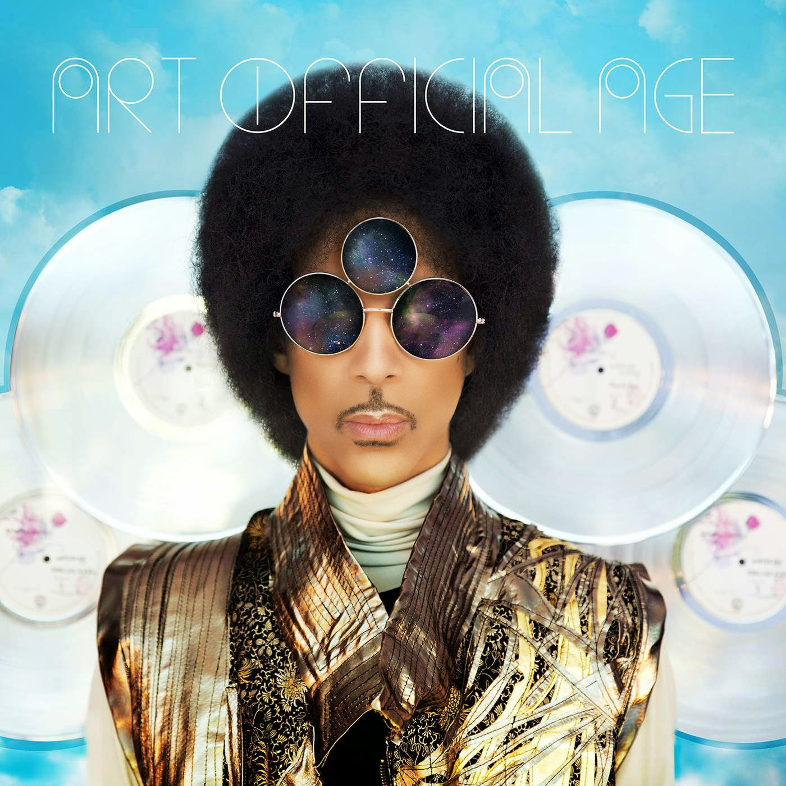

Prince - Art Official Age
Geplaatst door: xX_Maaaaike_Xx op September 14, 2014
Genre: pop
Twee nieuwe platen op één dag? Dat roept onwillekeurig herinneringen op aan de tijden van Guns ’n Roses en Bruce Springsteen, begin jaren negentig. Toen stond Price nog onder contract bij Warner, maar zijn ruzies met die maatschappij zij berucht. Vier platen in een enkel jaar ging Warner destijds veel te ver, net zoals driedubbelaars. Het meningsverschil liep zo hoog op, dat Prince ‘slave’ op zijn wang zette, Warner het moest doen met slordig in elkaar gezette albums waarna Prince voor zichzelf begon. Met wisselend succes. Eerst omarmde Prince het internet, bracht zelfs een groot aantal albums en nummers alleen digitaal uit, maar even later verklaarde datzelfde internet achterhaald, zocht zijn toevlucht tot de oude media en gaf een album weg via een beperkt aantal Europese kranten. Zij studio-output was de laatste twintig jaren, op zijn mildst gezegd, nogal wisselvallig. Tenenkrommend werd het nooit, ook niet in deze eeuw, maar Musicology (2004), 3121 (2006), Planet Earth (2007), Lotusflow3r / MPL Sound (2009) en 20Ten (2010) bevatten naast hoogtepunten ook niemendalletjes en gemakzuchtige herhalingsoefeningen. Live is Prince het laatste decennium echter in absolute topvorm. Blauwdruk voor veel van zijn concerten is de Amerikaanse tournee van 2004, maar waar die tournee avond na avond grotendeels hetzelfde was, geldt anything goes sinds zijn 21 Nights In London Tour. Voor drie concerten in Chicago in 2012 benaderde Prince drummer Hannah Ford, getrouwd met toetsenist Joshua Welton die al eerder met Prince werkte, als gastdrummer. Gitariste Donna Grantis werd gevonden via youtube, gekoppeld aan de al sinds 2010 met Prince spelende bassiste Ida Nielsen en opeens was er een nieuw powerrocktrio: 3RDEYEGIRL. In 2013 volgden twee singles, Rock And Roll Love Affair en Screwdriver, maar die ontbreken op de albums die nu in de winkels liggen, uitgebracht door… Warner. Art Official Age is vintage Prince. Dus: alles zelf ingezongen en gespeeld, met slechts sporadisch een gastbijdrage. Met ‘Welcome home class, you’ve come a long way’ opent Prince een futuristische conceptplaat, maar dat concept is zo vergezocht, dat het beter meteen vergeten kan worden. Wel volgt een staaltje Nile Rodgers-funk versneden met een bijna platte housebeat, bizarre koortjes en een onverwacht optreden van Prince’s met falsetto zingende duistere alter ego Camille.
Art Official Age is vintage Prince.
Tijd om bij te komen biedt Prince echter niet, want meteen volgt de laidback funk van Clouds, zijn beste ballad in jaren (Breakdown) en het onweerstaanbare The Gold Standard (blazers!). De kale productie op U Know en Breakfast Can Wait werkt wonderwel, maar daarna lijkt het in te zakken. Lijkt, want Way Back Home steekt razendknap in elkaar, net als Funknroll dat hier opeens klinkt alsof Prince Pharell een lesje moderne productie wil leren. Het identieke intro van Funknroll is ook terug te vinden op Plectrumelectrum, maar daar funkt en rolt het door als Mother’s Finest in hun hoogtijdagen. Geen wonder want deze plaat is bijkans live in de studio opgenomen met 3RDEYEGIRL. Maar waar de versie op Art Official Age te klinisch en bedacht klinkt, is de versie hier ietwat lomp. En daar heeft dit album vaker last van. Het instrumentale titelnummer doet het live ongetwijfeld goed, maar is hier gewoon overbodig. Opener Wow knalt uit de speakers, heeft een lekkere opbouw, maar mist de spanning van prijsnummer Another Love, dat eveneens begint als soulballad, maar wanneer het koortje invalt en het gaspedaal wordt ingetrapt naar het einde toe meer en meer begint te lijken als het ultieme vervolg op Fleetwood Macs Go Your Own Way. In het andere hoogtepunt Fixurlifeup luidt het ‘Girl with a guitar is twelve times better than another crazy band of boys’ en op die momenten is iedereen het eens met de sneer naar alle dertien in het dozijn jongensbandjes, al of niet met gitaar, maar daar staan ook nummers als het saaie Boytrouble tegenover. De ballad Tictactoe is daarentegen weer geniaal en roept als vanzelf herinneringen aan het beste werk met Wendy & Lisa op. Live zal het, afhankelijk van wie er allemaal op het podium staan, weer heel anders klinken en hoogstwaarschijnlijk nog veel beter, getuige concerten in Paradiso en de Ziggo Dome. Beide platen zijn beter dan het merendeel van Prince’s officiële output de voorbij twee decennia, maar het is moeilijk je aan de indruk te onttrekken dat in deze twee albums, met hier en daar een gewijzigd arrangement, één echte vijfsterren plaat verborgen zit.
Tracklist:
- Art official cage
- Clouds
- Breakdown
- The gold standard
- U know
- Breakfast can wait
- This could be us
- What it feels like
- Affimartion I & II
- Way back home
- Funknroll
- Time
- Affirmation III